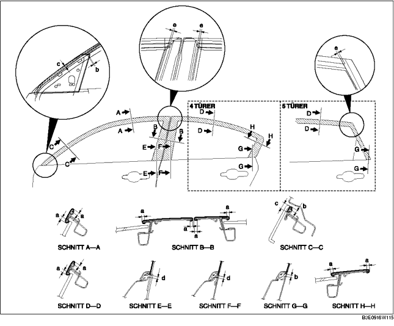

1. Fett und Schmutz von der Klebefläche der Tür entfernen.
2. Den nicht benötigten Teil entlang der gestrichelten Linien abschneiden.
3. Das Wachspapier abziehen und die Türrahmenfolie wie in der Abbildung gezeigt auf die Tür aufkleben.

4. Die transparente Schutzfolie von der Türrahmenfolie abziehen.